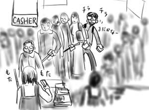
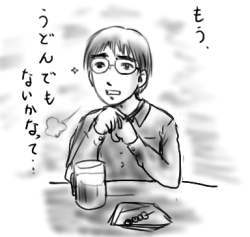
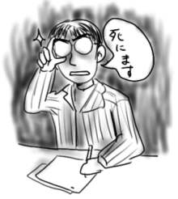
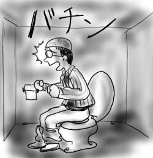

朝、出勤中におばあちゃんに呼び止められて「今日は雨が降る」ということを教えられたりしてますか？僕は教えられました(挨拶)。
今日は転職で去ってしまう人の送別会です。飲み屋へ出発を30分後に控えたアンニュイな定時前、仕事のキリが悪くなるので先に進めるのをやめてボンヤリしつつ、ふと幹事の先輩の机の方へ目をやると、なぜか「仮面ライダーアギト」のヘリウム風船が天井に届く勢いでプカプカしてます。どこから出したんでしょうか。
バスで駅まで移動し、そこから電車で大宮へ移動です。岩槻駅には「仮面ライダーアギト」のポスターが。
大宮に着いても開会まで40分くらい時間があったので、Appleユーザな先輩とソフマップで中古市場やらMacOSXを冷やかしたりしてました。ふと欲しいCDがあったのを思い出し、「ちょっと上でCD買ってきます」と言い残してエスカレータで上へ。先輩とは後で合流することにしました。
石野卓球『stereo nights』とリトルクリーチャーズ『Future Shocking Pink』を手に取ってレジに並びます。坂本真綾『Lucy』は見つからなかったので。しかし、今日はやったらとレジが混み合ってます。なんだと思って店内掲示のポスターを見ると、浜崎あゆみ『π』(←間違った表記)と宇多田ヒカル『DISTANCE』の発売日ですか。どいつもこいつも！なんだか特典でポスターが付くらしくて、ますますレジ対応に時間がかかってます。ポスター欲しさにわざわざここで買うなんてアニメCDと一緒ですなぁハハハ、などと笑ってられる余裕もなく開会時間が刻一刻とせまります。うわー先輩怒らせそう、とあせるばかりです。あゆとヒッキーは専用レジを用意していただきたい。

先輩を怒らせる前に合流できて、黒ヒゲ危機一髪、会場へ向かいます。飲み会では「ちょっと○○さんカッコいいと思わない？」と色目使う総務のお姉さんが前に座ったので、食べ物に集中しておきました。
二次会までつつがなく(ツツガムシに刺されたように僕の精気もなく、の略)終了し、幹事の先輩らと電車で帰ります。アギト風船は送別品のおまけとして辞める人に贈呈されたようで、困ったように持って帰ってました。帰りの電車では、吊り広告に「仮面ライダーアギト」。当たり日ですか！なんだか嬉しそうに幹事の先輩ともう一人の先輩がアギトとクウガについて話はじめました。子供がいると堂々と特撮の話が出来ていいなぁ！と思って下を向いていると、さらにもう一人の先輩が「これ、大人の女の人に人気があるってこないだトゥナイトでやってたよ」とか言い出して！YAOI！僕は言いたいことの１割も言えなかったヨ。
そんなわけで帰ってきたのですが、あゆとヒッキーにまぎれて買ったリトルクリーチャーズの『Future Shocking Pink』がもうすばらしくてすばらしくて。ミュージックマガジンのレビューで「今のJ-POPは合成着色料とか添加物でべったりと隙間が塗りつぶされてるみたいだが、リトルクリーチャーズは隙間をちゃんと抜いて聞き手にゆだねてて好きだ」というような主旨のことが書かれててまさに！とひざを打ったのです。いやもう本当にすばらしくて何回も何回も聞く。
土曜は風邪で寝込んでたヨ！(挨拶)
といっても、発熱もひどくなくて関節のだるさだけ。寝たらほぼ復活。
小田扉の初単行本「こさめちゃん」を何度も何度も読み返す。絶妙な抜きと心の隙間を狙って投げこまれる変化球にもうノックアウト！久しぶりに震えた。いとしい青春絵巻「話田家」、出だしから想像もつかない泣きなラストをむかえる「老エレジー」、歪んだ女子が主役の「スミ子の窓」、脱力系ギャグの「教育三十郎」など、意外と芸風が広い。それらもう全部好き。特に物事の評価軸にビームがあるところが他人とは思えません。常に携帯して読んでいきたい。激ラブマスト！(適当げ)
病み上がりなのに新宿で、ナルキ、ニシー、まさしろと飲み。すでに晩飯を食ってた僕に、メニューになぜか存在する「うどん」をやたら勧めてくるニシーとまさしろに対して、
「もう、うどんって年でもないと思うんだ…」
「いい加減、卒業しなくちゃ、ね。」
と大人の余裕ある表情でアンニュイに微笑んでみた。

キャラ、間違えた。
会社で仕様書のレビュー。エラーを通知されたらどうするの？と聞かれて、
「生きてても仕方ないので死にます(プロセスが)」
などと、ネガティブな発言を織りまぜてみる。
ちょっと気持ちよかったヨ！

デパートの２階のゲームセンター。黒く輝く『ナイトストライカー』の筺体。(以下なぜか関西弁でお送りします)
「全面パシフィストボーナス*)クリア狙うで！」(ずいーんばきゅーんがー)
(１面パシフィストボーナス！)
「おっしゃ！次いくで！ああ、おっと何？」
(キーンコーンカーンコーン)
「いかん、昼飯や。ここで置いといてとりあえず飯食わな」
(何者かが筺体に忍び寄る)
「あー食った食った！あ！何お前勝手にプレイしよん！あー！弾撃ってしもて！」
「へっへっへ邪魔してやったぜ」
「こいつ！」
(胸ぐらをつかむ)
「いや、いかんいかん。暴力はいかん」
(手はなす)
(すると突然、筺体の脇から涙流しながら男登場)
「ボーナスや！兄ちゃん、それパシフィストボーナスやでー！」
「現実でパシフィストボーナスや！」
という夢を見ました。疲れてるんでしょうか。
パシフィストボーナス：タイトーの体感3Dシューティング『ナイトストライカー』において、一発も弾を撃たず、かつ、敵から一発も弾を食らわずにステージをクリアするともらえるボーナス。
昨日の2月分をアップした後、そういえば休憩中にジュースを紙コップに入れてレジに並ぼうとしたらブーツの靴紐を踏まれてジンジャーエールをぶちまけたなぁ、とかスキーよりもプールの方が楽しかったなぁとか思い出して憂鬱になったりしました。雪山は僕が嫌いだ。僕も嫌いです(ハムラビズム)。
春分の日は有給を取って有意義に昼の長さと夜の長さを比較するぞ！と張り切って前日に夜更かししてたので起きたら昼過ぎでした。昼飯にポリンキーを食べてたら外から風の鳴く音。「今日は風強いなぁ」と寝惚けた頭で考えてたら、そういえば日曜から洗濯物を干しっぱなしだったことを思い出しました。やばっと立ち上がってベランダに目をやると物干し竿にシャツが一着だけ。ベランダに出て残りを探すと全て1階の部屋のベランダに落下してるではありませんか。ここは2階なので市街化距離は2です。仕方が無いので寝癖のついた頭で1階まで取りに降ります。手にとどく範囲にあるのは1着だけ。そのシャツを取り返すとハンガーを抜き取って残りのシャツにひっかけてずりずりと手の届く範囲まで引きづります。ここのベランダ泥だらけできったねぇなぁ！
洗濯し直す羽目になったんですが、今度は室内に干しました。いい天気なのに。

でもって、いい天気なので折り畳みたくなる号(my自転車)でレッツ外出！Book King、Book Off、など道ぞいのあらゆる古本屋をはしごしながら未知なる道(シャレ)をぐんぐん進んでいるといつの間にか大宮まで来てました。電車で15分の距離を１時間以上かけて！
適当に大宮でブラブラした後(主に本屋で)、せっかくだから自転車を折り畳んで電車で帰ろうと思ったんですが、どうせなら3駅くらい先で乗った方が運賃も安いのでは？と思ったのが運のつき(いつも尽きてますが)。道は意外な展開を見せ始め(未知だけに)、気がつくと国道17号を上尾に向かって疾走かつ失踪してました。もはや駅に出るなんて不可能！友人に電話で道路地図を見てもらいながら16号へなんとか合流。しかし16号は横断歩道なんて歩行者にやさしいものはなく、道越えはすべて歩道橋！しかも三叉路で目的地へは真ん中のレーン(歩道なし)を進むしかなかったりで泣きそうになりながら道からはぐれないように道路の右から左、左から右へ歩道橋を渡りまくってなんとか岩槻まで帰還。自動車道は高架で見晴しのよい感じなのに、歩行者道はその下の薄暗いどぶ川の横を曲がりくねって進む感じで差別もはなはだしいと思いました。地上はいつから人間のものじゃなくなったんですか！
会社ではロンリー狼の僕なので(動物占いが)、大だろうが小だろうが必ずトイレは個室プレイ(こしつぷれい)です。きゃっ！男らしいー！(むしろ必ず個室プレイは女性的なのでは)
話は変わって職場ではISO14001(環境システム)が実施されているので節電は必須項目です。しばらく使わないディスプレイや人のいなくなった部屋は すぐさま消灯が義務づけされています。
だからと言って僕が孤軍奮闘してる時に(ケツから)、トイレをいきなり消灯するのはやめてください。それって僕はいないのと同じってことですか？石ころ帽子(長い挨拶)！

お久しぶりでした。２月からこっち、会社の人にページがバレて開き直るのに時間がかかったのですが、開き直ったからには石ころ帽子プレイも含めてバシバシ行きますよ(できれば含めたくない)！そんなわけで、今日の更新は１月からこっち何があったかを整理してみることにします。
1月
大学時代からの友人であるしぐれ先生の結婚披露パーティーに音楽係として参加。新郎新婦の登場シーンに「ツァラトゥストラはかく語りき」をかけた後、クラフトワークの「EXPO2000」に繋いで、21世紀から20世紀へ後退することで僕の後ろ向きさを表現するなど概ね間違った曲チョイス。続いて同じくクラフトワークの「マンマシーン」で人間と機械の繋りを、本来人間と人間の暖かいつながりを表現すべき場で表現してみたりしました。ごめんなさい。ハドソンゲームコレクションから「ナッツ＆ミルク」と「バンゲリングベイ」。前者は新婦を求めてがんばるしぐれ先生、後者は敵と味方にわかれてプレイする二人プレイを表現です。ごめんなさい。嘘。本当はおもしろいからかけました。後はゲーム大好きしぐれ先生なんで主にピコピコサウンドをいろいろかけました。途中コンピューターおばあちゃんで場を疑似的に懐かしい雰囲気にしてみました。
新郎新婦のプロフィール紹介で、しぐれ先生には「哀・戦士」、新婦方にはELSAの「T'en Va Pas」をBGMに。後者について司会の平岩が「もったいねぇ！」と言っていたのが印象的でした(暴露)。
お色直し登場時に新世紀エヴァンゲリオン劇場版Airで弐号機が池底から暴走するシーンのBGMでお出迎え。平岩所有の盤だったので、CDが擦り切れてて音飛びするというエピソードも。縁起でもないネ！後はめんどくさくなったので「ラブ＆ポップ」のサントラからクラシックだけチョイスしてかけてました。当然新郎新婦退場時は「ほたるの光」(シャッター音入り)です。重ね重ね申しわけありませんでした。お幸せに。
2月
休日出勤とかしてました。西海岸メンバーでガーラ湯沢に日帰りでスキーに出かけたりもしたのですが、その翌日が休日出勤とかそういう素敵な事態でしたよ。去年に引き続いて(参照: 2000/3/4 日記)、今年もガーラ湯沢は吹雪きでゲレンデ閉鎖！どうなってますか。
うわぁ！波乱万丈！(全然です)。
そんなわけでこれからもよろしくです。前回からですが、indexの下の方にPSION Revoで書いた絵を入れるようにしました。恥の上塗りという気がしないでもないです。あわせてチェキ！